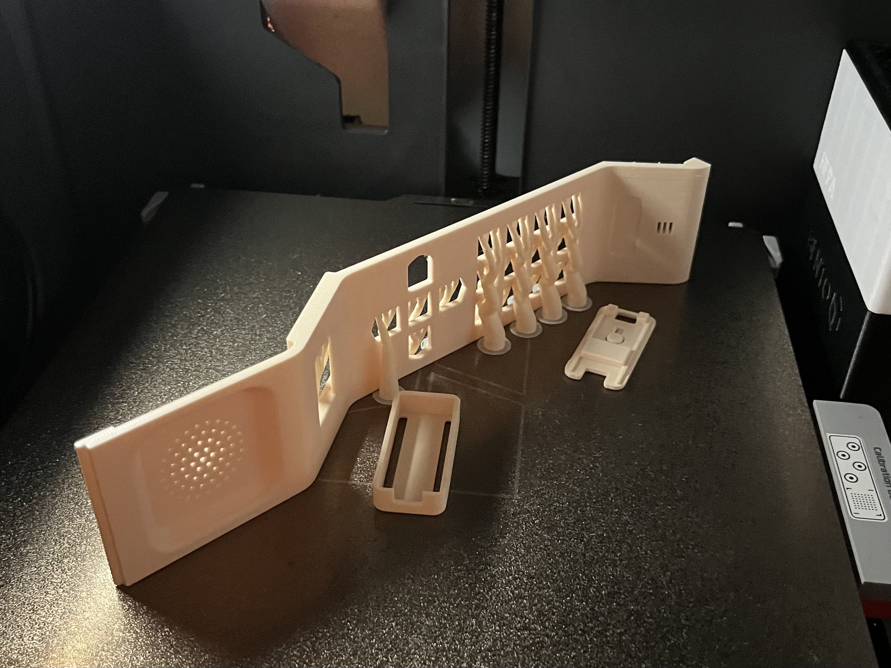
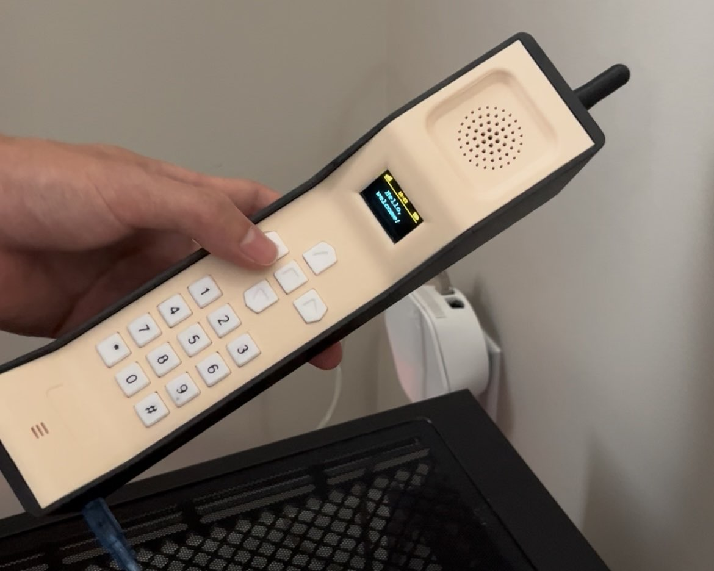

Project Overview
This project is a working replica of a 90s brick phone, built as a personalized birthday gift. I handled everything from the enclosure design to the electronics and firmware, ending with a handheld device that behaves like the real thing: it shows a menu, beeps when you press keys, and announces a voice message.

I designed the shell in SolidWorks, modeling the body, button cutouts, display window, speaker grille and internal mounting features around the actual component dimensions. I printed it on a Bambu X1C in PETG, chosen for its toughness and layer adhesion, and tuned the part geometry so the electronics fit securely with no glue.

Inside, an Arduino Nano controls a 0.96" OLED display, a voice recording and playback module driving a 0.5 W speaker, and a piezo buzzer. I soldered the five-way navigation array (up, down, left, right and a center confirm key) from push switches onto a perf board myself, then wired it all into the compact shell.
On the software side, the firmware handles the button inputs, a menu system that you navigate with the arrow keys, and key-press beeps from the buzzer. When a voice message is waiting, a notification appears on screen. Playing it triggers the pre-recorded birthday greeting, followed by a happy birthday melody played on the buzzer, which gives it the low-bit, nostalgic sound I wanted.
